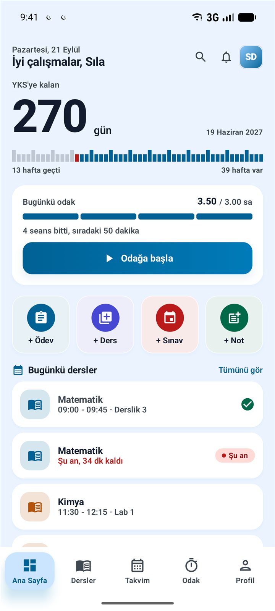
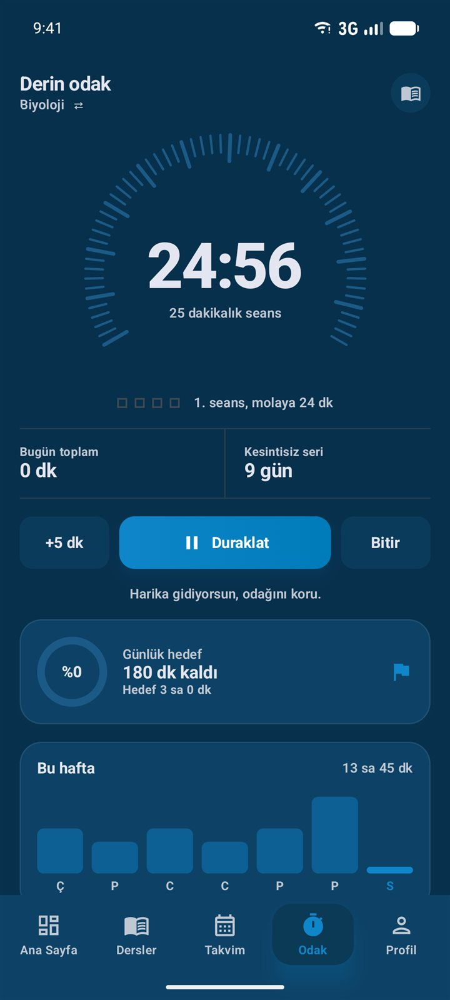
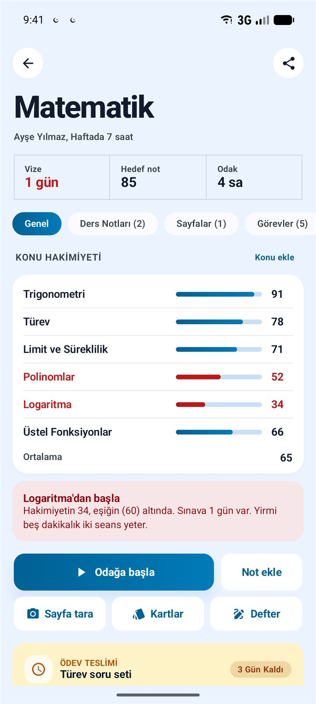
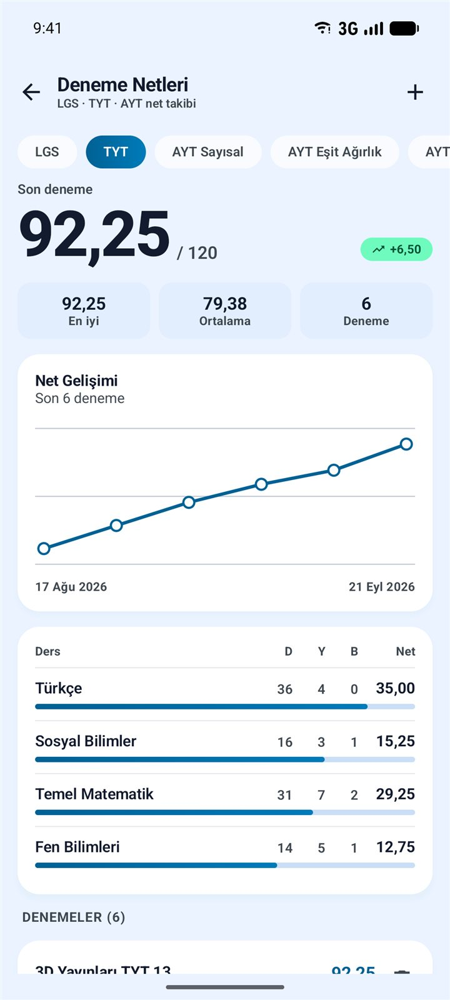
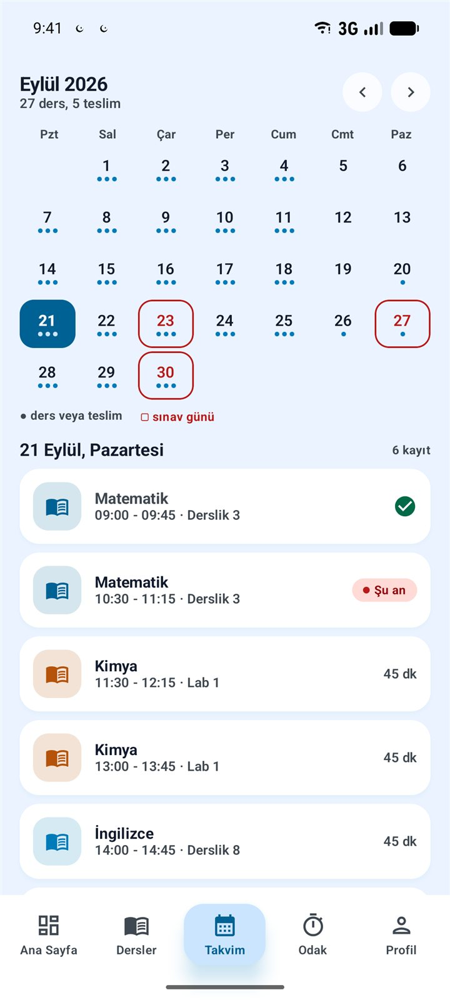
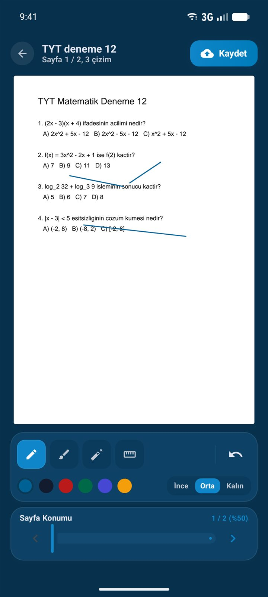
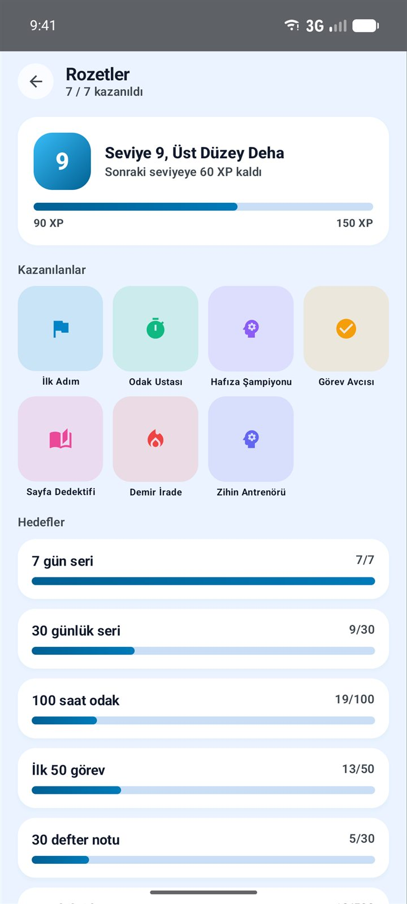
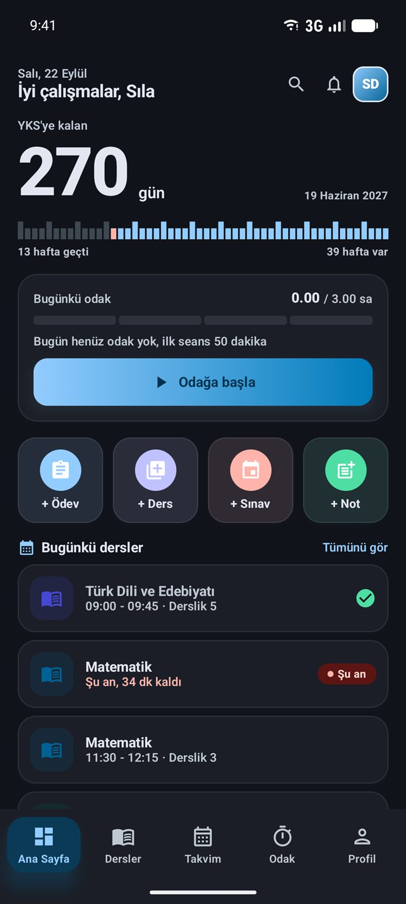

Sınava kalan günü gör. Çalıştığın zamanı ölç.
ÖğrenciX; odak seanslarını, derslerini, ödevlerini ve deneme netlerini tek yerde toplar. Kalan zamanı ve o zamanı nasıl kullandığını görürsün.

Derin odak, kadranla.
25/5, 50/10 ve 90/15 düzenleri. Sayaç halka değil; her çentiği bir dakika olan altmışlık bir kadran. Seans bitince hangi derse ne kadar çalıştığın kaydedilir.
- Günlük hedef
- Kesintisiz seri
- Haftalık grafik

Zayıf konun kendini gösterir.
Her derste konu konu hakimiyet puanı ver. Eşiğin altına düşen konu, sıradaki hamle olarak önüne gelir: “Logaritma'dan başla.”

Netlerin yükselişini izle.
LGS, TYT ve AYT (Sayısal, Eşit Ağırlık, Sözel) denemelerini doğru ve yanlış olarak gir. Net otomatik hesaplanır, gelişimin grafikte görünür.
- LGS
- TYT
- AYT

Dersler, ödevler, sınavlar. Tek takvimde.
Haftalık program ve ay takvimi, ders başlamadan hatırlatma. Teslim tarihine göre gruplanan ödevler; geciken teslim kırmızıda.
- Sınav geri sayımı
- Not ortalaması
- Hatırlatmalar

Defter, PDF ve tarama bir arada.
Notlarında kalın, italik ve fosforlu biçimlendirme. PDF kitapçıkların üzerine kalemle çiz. Defter sayfasını tara, yazıyı metne çevir ve içinde ara.
- Akıllı Defter
- PDF üzerine çizim
- Bilgi kartları

Çalıştıkça seviye atla.
Seans arası kısa zihin oyunları, okuduğun kitapların takibi, seri ve saat hedeflerine bağlı rozetler.

Verilerin senin.
Hesap açmadan kullan; her şey telefonunda kalır. İstersen giriş yap, verilerin yedeklensin ve cihazların arasında eşitlensin. Gece çalışanlar için tam koyu tema, tablet düzeni ve ana ekran widget'ları da var.

Sınava kalan günler boşa gitmesin.
ÖğrenciX ücretsiz. İndir, sınav tarihini gir, ilk odak seansını başlat.